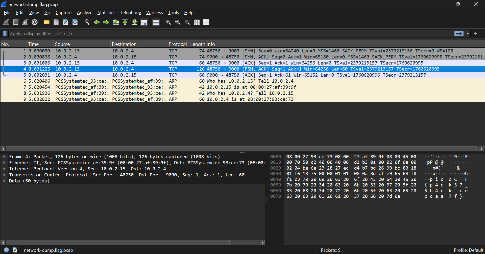
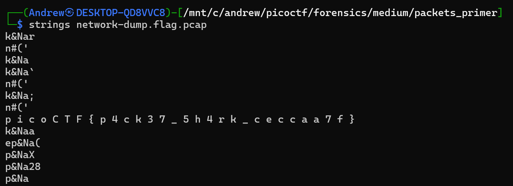

Packets Primer
Wireshark PCAP
Goal: Analyze a small packet capture and recover the hidden flag.
Challenge Description
Screenshot from the picoCTF challenge page:

Solution
Opening the provided PCAP in Wireshark shows that the capture is extremely small — only 9 packets total. Scrolling through the packets, the flag can be seen directly in the ASCII pane of one of the TCP payloads.

An even faster method is using strings. Grepping for
picoCTF does not work here because the flag characters are separated
by spaces. Running strings alone reveals the flag clearly.

Flag
picoCTF{p4ck37_5h4rk_ceccaa7f}
Tools Used
- Wireshark — Inspect packet contents and view ASCII payloads.
- strings — Extract readable data directly from the PCAP.